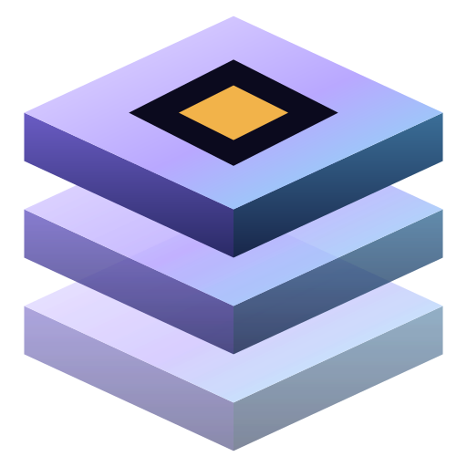
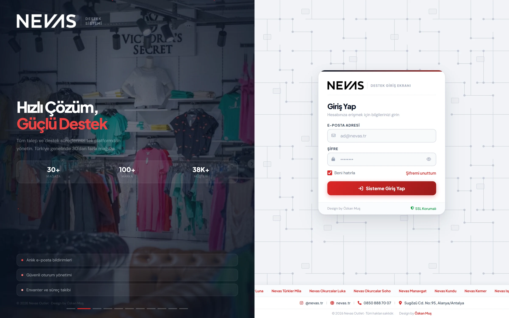
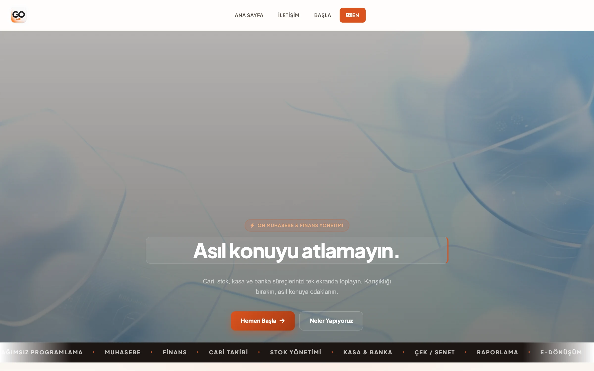
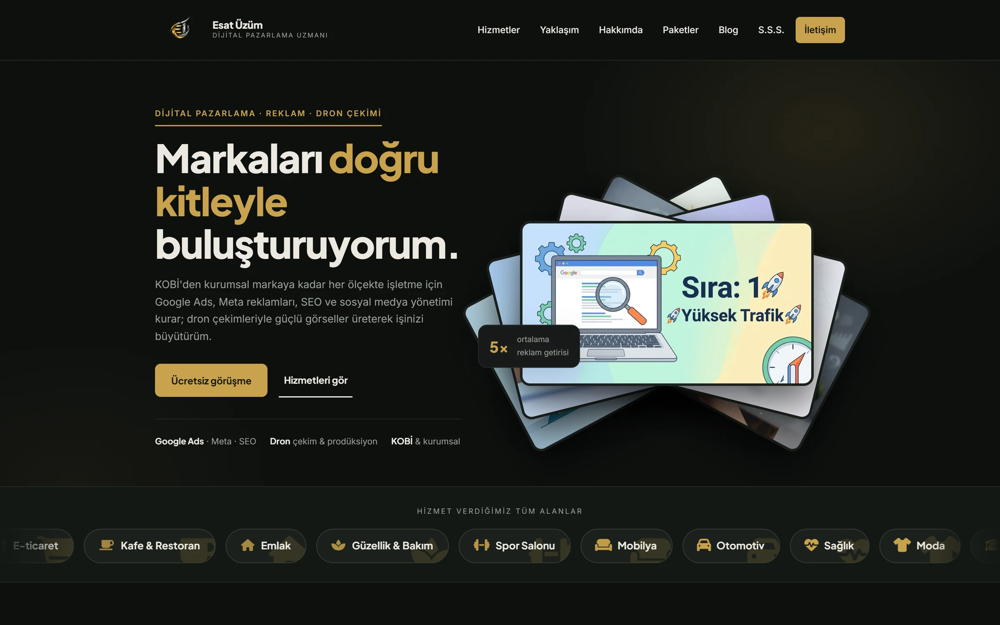

Hizmetler · 1/6
01 / Hizmetler
İnternette yeriniz
Küçük bir dükkân da olsanız büyük bir firma da: işinizi anlatan, telefonda düzgün açılan, uygun bütçeli tek sayfalık ya da birkaç sayfalık bir site.

Özkan Muş01 / Hizmetler
Küçük bir dükkân da olsanız büyük bir firma da: işinizi anlatan, telefonda düzgün açılan, uygun bütçeli tek sayfalık ya da birkaç sayfalık bir site.
Kullandığınız programı açmadan ciroya, stoğa, tahsilata bakın. Veri kendiliğinden web'e taşınır; telefondan ya da bilgisayardan.
Yeni program öğrenmek yok. Mevcut programınıza bağlanılır, gereken veri alınır ve sade bir ekrana dönüşür.
Personel programı açmaz: puantaj, sayım, transfer, istenirse satış bile telefondan girilir ve merkeze ulaşır.
Veri aktarımı, yedekleme ve bildirimler zamanlanmış görevlerle her gün kendiliğinden döner. Kimse elle rapor çekmez.
Ekranın arkası Nebim V3 ve SQL Server deneyimine dayanır: envanter raporu 20 dakikadan 59 saniyeye, satır kaybı olmadan.
02 / Çalışmalar
Talep, puantaj, tahsilat/tediye ve rol bazlı erişim; Nebim entegrasyonuyla mağaza ve merkez aynı kayıtta çalışır.

Cari, stok, kasa ve banka; çok firmalı yapı, anlık raporlar. Türkçe ve İngilizce.

Dijital pazarlama uzmanı için kurumsal site: hizmetler, paketler, blog ve e-posta bildirimli iletişim formu.

Siteyi aç ↗03 / İletişim
Teşekkürler. En kısa sürede e-postayla dönüyorum.